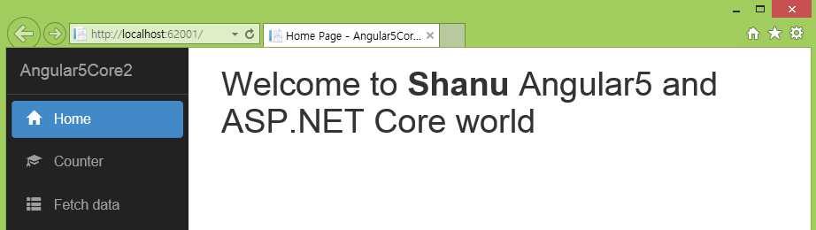
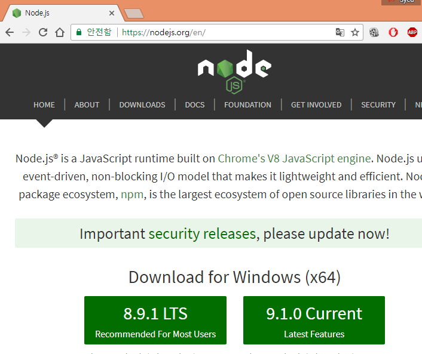
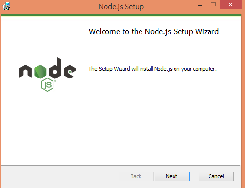
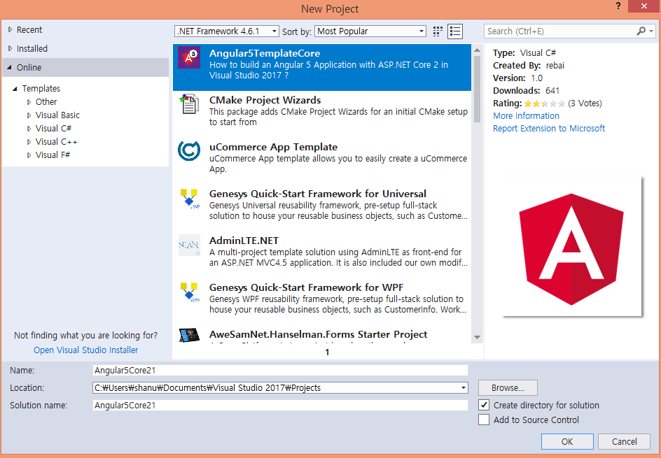
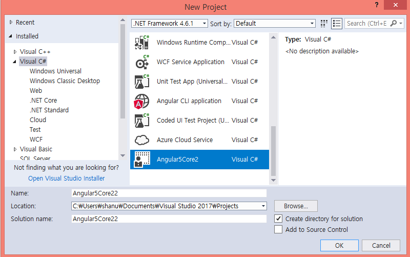
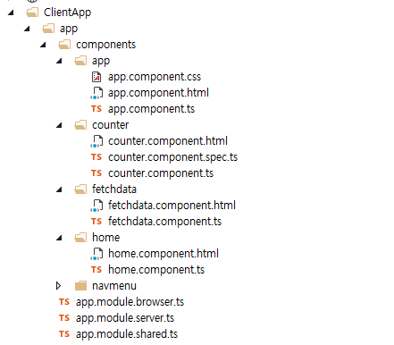

Getting started with Angular5 and ASP.NET Core
Introduction
We hope you all know that Angular 5 has been released. In this article, we will see how to start working with Angular 5 and ASP.NET Core using Angular5TemplateCore.

Building the Sample
Prerequisites
Make sure you have installed all the prerequisites on your computer. If not, then download and install all, one by one.
- First, download and install Visual Studio 2017 from this link.
- Download and install .NET Core 2.0
- Download and install Node.js v9.0 or above. I have installed v9.1.0 (Download link).
Note
Prerequisites Installation part
Install Nod.js
Install the Node.js version 9.0 or above on your computer.

After downloading Node.js install it on your computer.

Installing Angular5TemplateCore
Let’s see how to install the Angular5TemplateCore to your Visual Studio .NET Core template.
Open Visual Studio 2017 and go to File -> New project. Select Online from the left menu, then select Visual C#. From the list, search for Angular5TemplateCore and click OK.

Close your Visual Studio and wait until Angular5TemplateCore installs. After the installation is completed, it's time for building your first Angular 5 application using ASP.NET Core Template. We will see this in detail in the code part.
Description
Now, it’s time to create our first Angular 5 and ASP.NET Core application.
Step 1 Create Angular5TemplateCore
After installing all the prerequisites listed above and Angular5TemplateCore, click Start >> Programs >> Visual Studio 2017 >> Visual Studio 2017, on your desktop.
Click New >> Project. Select Visual C# >> Select Angular5Core2. Enter your project name and click OK.

Once our project is created, we can see it in the Solution Explorer with Angular5 sample components, HTML, and app in the ClientApp folder, along with ASP.NET Core Controllers and View folder.

Here, these files and folders are very similar to our ASP.NET Core Template Pack for Angular 2.
Package.json File
If we open the package.json file, we can see all the dependencies needed for Angular 5 and the Angular CLI has already been added by default.
Adding Webpack in Package.json
"postinstall": "webpack --config webpack.config.vendor.js"
"postinstall": "webpack --config webpack.config.vendor.js"
Build and run your project

When we run the Angular 5 ASP.NET Core application, we can see the default home page with left side menu and Counter and Fetch data. Yes, in Angular5Core2Template, when we create a new project, by default, 3 components and an HTML file are added to Angular 5 demo - Home, Counter, and Fetch data.

Changing Home Component and HTML file
Now, let’s try to change the home component class and HTML file to display the output with our name on the homepage.
For this, first, we edit the home.components.ts file. Here, in Home Component class, We have created a public variable to display my name as “myname”.
import { Component } from <a href="mailto:'@angular/core'">'@angular/core'</a>;
@Component({
selector: 'home',
templateUrl: './home.component.html'
})
export class HomeComponent {
public myname = "Shanu";
}
import { Component } from <a href="mailto:'@angular/core'">'@angular/core'</a>; @Component({ selector: 'home', templateUrl: './home.component.html' }) export class HomeComponent { public myname = "Shanu"; }
<h1>
Welcome to <strong>{{ myname }}</strong> Angular5 and ASP.NET Core world
</h1>
<h1> Welcome to <strong>{{ myname }}</strong> Angular5 and ASP.NET Core world </h1>
Same like this we can also found default Counter and Fetch data from API sample component and html file has been added by default if we want we can change that to our requirement or we can create our own component and html files.

Left Menu

Source Code Files
- Angular5Core2.zip - Version 1.0
More Information
If you have already worked with ASP.NET Core Template pack for Angular 2, then this will be more simple and easy for you to work with Angular 5 because it follows the similar steps. Angular 5 is mostly similar to Angular 4 with same features but with some advanced level. In our next article, we will see in a deeper manner and in detail with some real-time example to working with Angular 5 and ASP.NET Core.